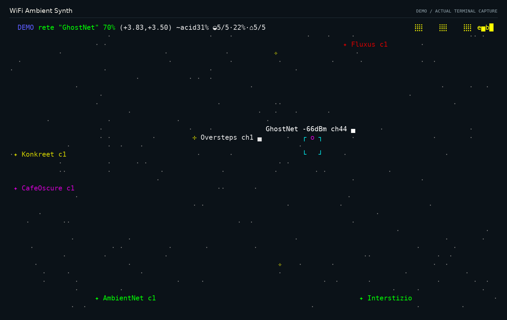
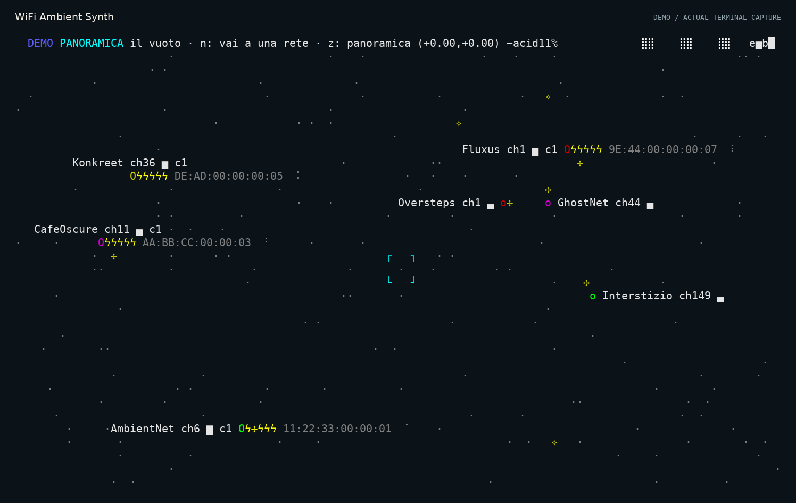
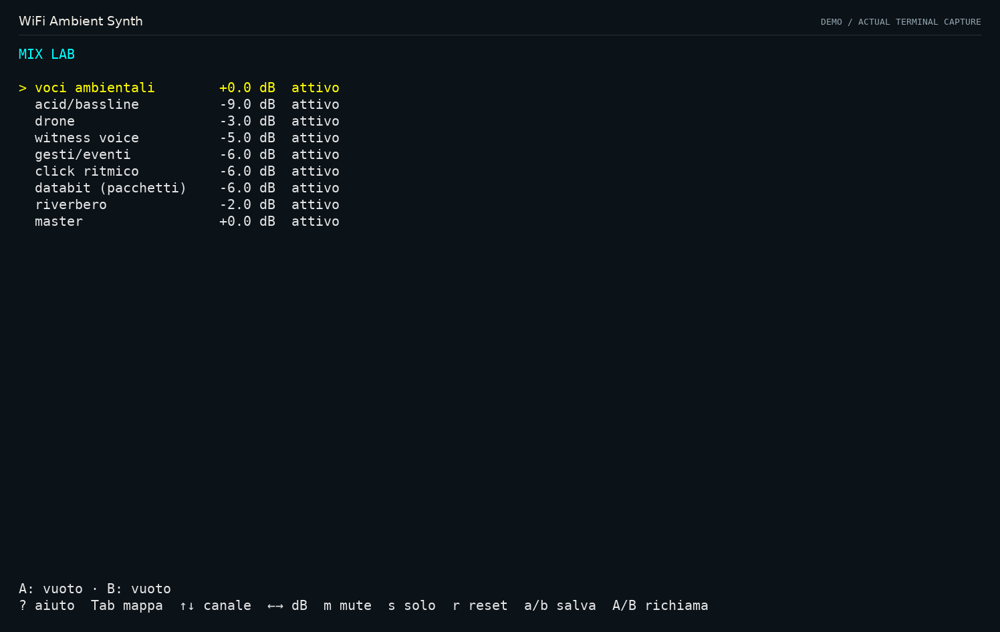

Attraversa la mappa.
Le frecce spostano il punto di ascolto. z apre la vista d’insieme; n ti porta alla prossima rete.
UN ESPERIMENTO DI ETTORE / OPEN SOURCE
La stanza è già piena di segnali.
Mi interessa cosa succede quando cominciamo ad ascoltarli.
Il WiFi diventa un ambiente musicale. Le reti sono presenze, il traffico porta movimento. Tu scegli dove andare e a cosa prestare attenzione.
Rust · ambient generativa · mappa esplorabile · GPLv3
Schema poetico del gesto di ascolto
01 / PRIMA IL SUONO
Audio originale del sintetizzatore, registrato nella stessa sessione delle immagini. Metti le cuffie, poi guarda la mappa.
DEMO / 00:30 / STEREO
Reti simulate. Nessuna cattura radio live in questo estratto.
Registrazione e provenienza ↗
02 / IL GESTO È L’ATTENZIONE
Non devi ascoltare tutto allo stesso modo. Avvicinati a una rete, lascia emergere la sua voce, poi torna all’insieme. Il punto in cui ti trovi cambia ciò che senti.
Le frecce spostano il punto di ascolto. z apre la vista d’insieme; n ti porta alla prossima rete.
La vicinanza dà spazio a quella voce. In monitor, l’attenzione può dare più tempo al suo canale radio.
Allontanati o entra nel Mix Lab con Tab: nove canali, mute, solo e due fotografie del tuo mix.



03 / DA DOVE VIENE
Ettore / ettword
E se la rete che ci circonda fosse un luogo da ascoltare?
Questo progetto parte da lì. Il codice conservato dall’agosto 2026 racconta un sintetizzatore che diventa una mappa: suono, presenza, movimento.
Le prove hanno insegnato anche a fermarsi e distinguere. Un ritmo può venire dalla radio o dalla coda del software. Un canale non osservato non è un canale silenzioso. Una misura migliore non significa automaticamente una musica migliore.
Per me il centro resta il gesto: scegli un oggetto, prestagli attenzione, scopri cosa cambia. Lo strumento è ancora in costruzione.
Leggi la storia completa ↗Creato da Ettore, con assistenza di Claude Code e Codex per sviluppo e verifiche.
04 / ENTRA ANCHE TU
La demo funziona su Windows e Linux. Servono Rust, un terminale e un’uscita audio. Su Linux installa anche le librerie di sviluppo ALSA.
git clone https://github.com/ettword/wifi-ambient.git
cd wifi-ambient
cargo run --locked --release -- --demoPer il WiFi realeLinux, build wifi, adattatore compatibile e permessi di cattura. Prove effettuate su AR9271 in WSL2.
Per contribuireCodice GPL-3.0-only. Porta un ascolto, un esperimento ripetibile, una segnalazione precisa.
Stato del progettoVersione 0.1.0 sperimentale. Windows e Linux per la demo; cattura monitor su Linux. Una sola radio osserva un canale alla volta.